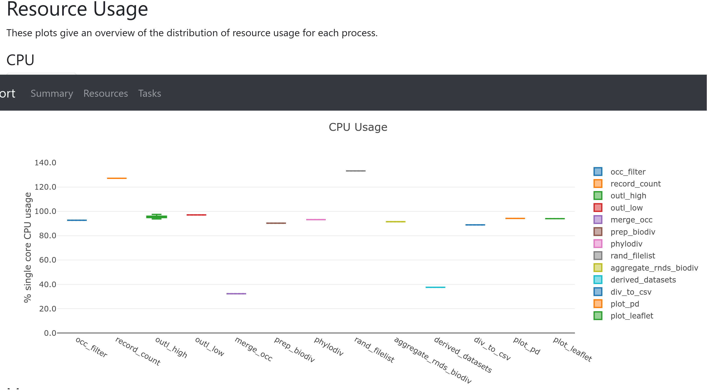
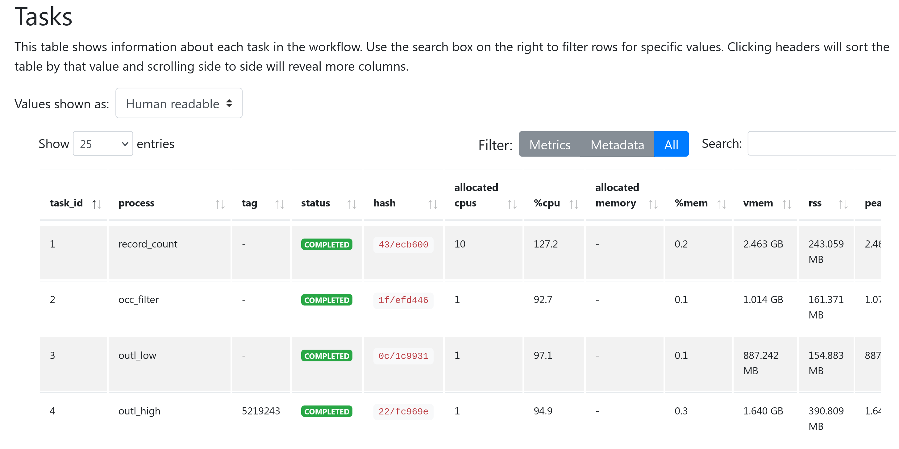
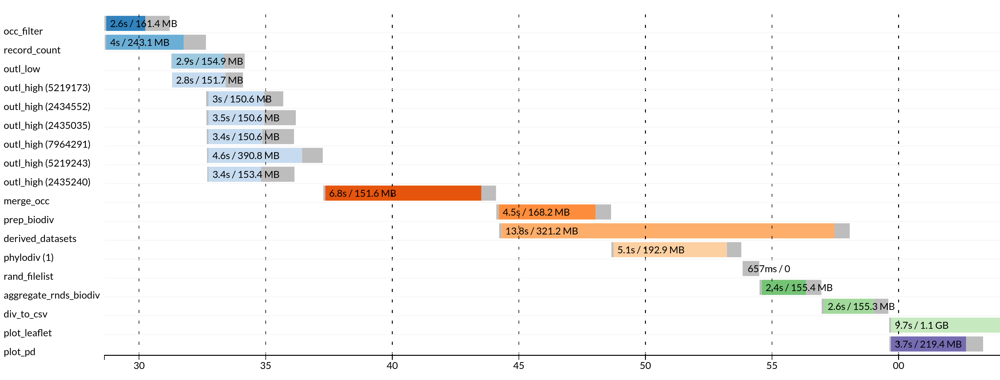

PhyloNext output¶
Diversity estimates in tabular format¶
Table 03.Plots/Biodiverse_results_merged.txt
Interactive map with diversity values¶
The leaflet-based map is located in 03.Plots/Choropleth.html.
As a small example (based on the Acacia dataset from Australia, H3 resolution = 3), a map will look like this:
You may toggle selectors at the top-right corner to show the results for a particular diversity metric on the map. In the example, there are three indices available:
RICHNESS_ALL, observed species richness;SES_PD, the effect size for the phylogenetic diversity;CANAPE, centers of neo- and paleo-endemism (according to the CANAPE analysis; see Mishler et al., 2020 for details).
Use the pipeline's --leaflet var parameter to specify which indices will be displayed on a map.
GeoPackage¶
Diversity estimates and H3 polygons are also exported into the GeoPackage file (03.Plots/Diversity_estimates.gpkg).
OGC GeoPackage is a relatively new, open standard data format for storing geospatial data.
It is designed to be an efficient, portable, compact, and self-contained format that can store and exchange data within a single file.
GeoPackage is supported in most modern GIS software packages (e.g., QGIS). See the example of opening GeoPackage in QGIS in the post-processing section.
Why not shapefiles?
More information on the comparisons of different formats for storing geospatial data can be found here:
http://switchfromshapefile.org/
Dataset information¶
The pipeline output contains two files with references to the original data sources, which can be used for citing the data and giving proper credit to the original data providers who collected and curated the data.
Species occurrences - results/pipeline_info/Dataset_DOIs.txt
Phylogenetic tree - 02.OTT_tree/citations.txt
The Dataset_DOIs.txt file also contains Digital Object Identifiers (DOIs) for the datasets,
which can be used to create a derived dataset of species occurrences.
For more information, see the Derived datasets paragraph in the post-processing section.
Pipeline summary¶
In the results/pipeline_info directory, there are pipeline execution reports created by Nextflow.
These files in HTML format includes the workflow report and execution timeline for each process.
Workflow report contains many useful metrics about pipeline execution.
In particular, the Resources section plots the distribution of resource usage (CPU, memory, job duration, and disk I/O) for each workflow process using the interactive plotly.js plotting library. The plots have several tabs with the raw values and a percentage representation showing what proportion of the requested resources were used. These plots are very helpful in checking that task resources are used efficiently. 
The Tasks section lists all executed tasks, reporting the status, the actual command script, and many other metrics for each of the tasks.
The same information is also stored in a tabular format in tab-delimited format (e.g., execution_trace_*.txt).

Execution tracing file contains helpful information about each process, including submission time, start time, completion time, CPU, and memory used. 
Resource usage metrics
To learn more about how resource usage is computed by Nextflow, see:
https://www.nextflow.io/docs/latest/tracing.html#trace-report and
https://www.nextflow.io/docs/latest/metrics.html#metrics-page